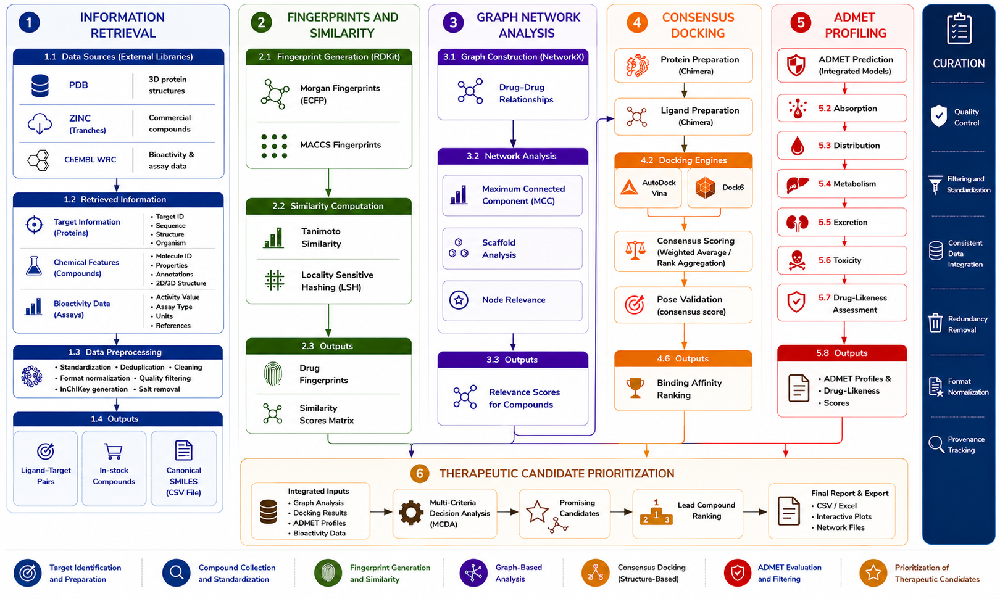
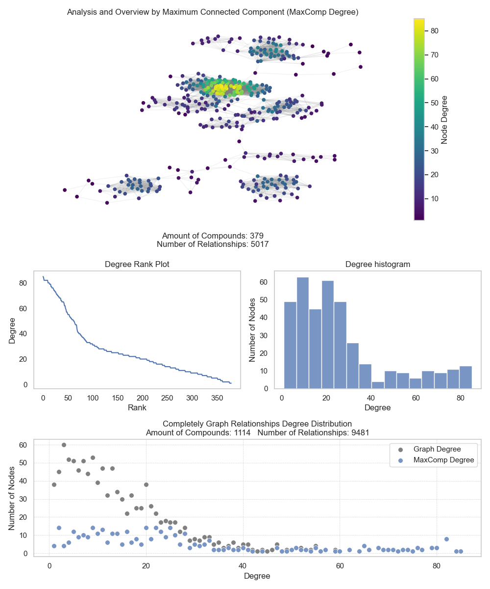

Projects that travel with you
Choose a folder for each project. Export and import its configuration, inputs, results and versions to continue on another computer while reusing compatible completed experiments.
Computational Molecular Intelligence
Retrieve molecular data, build the pipeline your study needs, and keep its inputs, settings and results together. BioMolExplorer combines a Flet workspace with Python services for similarity analysis, graph selection, ADMET screening, preparation, redocking and docking.
Protein structure retrieval and filtering
Bioactivity and target extraction
Large-scale compound libraries evaluation
Automated redocking validation
Consensus docking score integration for advanced ranking
Early-stage absorption, distribution, and toxicity profiling
Structural similarity expansion with cross-source deduplication
Private projects, invitations and configurable pipelines
Managing high-volume heterogeneous molecular repositories remains one of the principal challenges in modern computer-aided drug design (CADD) workflows. Public biological repositories often contain inconsistent metadata, incomplete experimental information, duplicate records, and records with varying levels of quality.
BioMolExplorer was designed to address these limitations through a flexible information retrieval architecture that integrates and standardizes datasets from PDB, ChEMBL, PubChem, and ZINC. The platform enables the automated generation of research-ready molecular datasets suitable for computational pharmacology, high-throughput virtual screening, network analysis, and comprehensive molecular similarity investigations.
The Flet workspace lets researchers create private projects, invite collaborators and connect scientific stages in the order required by their study. ChEMBL retrieval can be expanded with PubChem structural similarity while excluding duplicates. ADMET screening, graph selection, preparation, redocking and docking can be configured independently, with results and logs kept for each run. Scientific interpretations still require validation with study data.
Standardized integration pipelines for biological, chemical, and structural data.
Extraction and filtering strategies aligned with therapeutic target investigation.
Construction of molecular affinity networks and connected component analysis.
Early-stage evaluation of absorption, distribution, metabolism, excretion, and toxicity properties for strategic candidate screening.
BioMolExplorer combines automated retrieval pipelines, molecular fingerprinting, graph analysis, and redocking validation into a unified computational ecosystem.
Automated extraction pipelines for PDB, ChEMBL, PubChem, and ZINC repositories supporting computational screening initiatives.
Configurable filters for EC number, bioactivity thresholds, molecule type, similarity score, molecular weight, experimental method, and structural quality.
Choose Morgan, MACCS, or pharmacophore per block. Similarity stages identify the algorithm from generated inputs automatically.
Tanimoto-based molecular similarity analysis for clustering, scaffold identification, and candidate prioritization.
AutoDock Vina-based validation strategies for assessing structural consistency and docking reproducibility.
Graph-centric analysis for detecting molecular communities, connected components, and common scaffolds.
Combination of AutoDock Vina and DOCK6 scores, with configurable repulsion weighting and exported consensus rankings.
Molecular properties, heuristic absorption and distribution classifications, toxicity filters and exported screening subsets.
Drag stages onto a visual canvas, connect their ports, and double-click each block to configure it. Guided forms handle filters and engine settings; advanced users can edit JSON and scientific templates. Start with a ready-made pipeline or bring your own data wherever the backend format allows.
Choose a folder for each project. Export and import its configuration, inputs, results and versions to continue on another computer while reusing compatible completed experiments.
Invite editors or viewers from the project's Share button. Autosaved edits appear for collaborators, while an attributed change history lets owners restore configuration, files and results to an earlier state.
Combine selected output files and validated uploads in each block. Explore paginated compound tables directly in your results, or filter interactive ADMET EGG plots by BBB and HIA classification. Click a point to open its molecular 2D structure and download the selected dataset or chart.
Prepared receptors must include the metadata and files expected by the docking protocol. See the input format guide.
Explore the workspace guide → Projects, migration and versions → Projetos e versões em português
The scientific modules remain organized into retrieval and analysis workflows. Above them, the Flet workspace manages accounts, project permissions, files and pipeline dependencies. Each scientific stage runs in a separate Python process, with its own configuration snapshot, outputs and logs. The diagram below the heading illustrates the scientific workflow; the architecture guide documents the current application services and their limits.
Responsible for data extraction, normalization, and integration across molecular, structural, and bioactivity repositories.
Downloads protein structures using EC number, resolution threshold, ligand presence, polymer entity, and experimental method filters.
Retrieves bioactivities, therapeutic targets, molecular entities, and expands the compound set with PubChem structural similars.
Handles large-scale URI-based molecular library acquisition workflows for virtual screening applications.
Responsible for fingerprint generation, similarity modeling, graph analysis, and automated redocking validation.
Executes automated docking, redocking pipelines, and RMSD-based validation procedures for structural curation.
Molecular property calculations, heuristic ADMET classifications, toxicity filters and exported subsets for early screening.
Generates molecular fingerprints, computes similarity matrices, and identifies connected molecular components.
Download the GitHub project using Git or Code → Download ZIP, then open a terminal in the source code folder. The Python package requires Python 3.12 or newer.
Before starting: install UCSF Chimera 1.17, DOCK6 6.11 and DMS.
These tools must be installed and configured on the computer running calculations. Installing the Python package or Conda environment does not install them. The interface may open without them, but dependent preparation, redocking and docking stages will fail.
Installation and executable checks (English) · Instalação e verificação (Português)
git clone https://github.com/mpiress/BioMolExplorer.git
cd BioMolExplorer
conda env create -f environment.yml
conda activate BioMolExplorer
python -m pip install -e '.[ui]'
biomolexplorer-ui --web --dock6-path /path/to/dock6-6.11Open http://127.0.0.1:8550 and create your account. If the environment already exists, activate it and install the interface.
biomolexplorer-ui --web --no-browser \
--data-dir ./workspace-data \
--worker-python /path/to/python \
--dock6-path /path/to/dock6-6.11Check Chimera 1.17, DOCK6 6.11, DMS and the DOCK6 accessory programs on PATH before starting. Open Babel and Vina are also required by their protocols. Pass the complete DOCK6 installation root, containing bin/ and parameters/, to --dock6-path.
Use the workspace guide for accounts and pipelines, or the backend guide for CLI usage and parameters. The current executor uses a local Linux backend, SQLite and a bounded queue; see deployment and scientific limitations.
Connect one or more similarity stages, or upload validated external similarity CSVs. Each source produces a separate graph analysis, with isolated compounds preserved and the largest connected component (MCC) highlighted.
Explore full networks and their MCC with degree color scales, pan and zoom, and circular layouts. Hover to identify compounds and click to inspect molecular structures. MCC views show the common molecular fragment and offer downloadable figures combining its image with the network and degree statistics. Read the graph explorer guide.
Common molecular fragments with explicit search status and configurable time limits.
Structured outputs suitable for machine learning and advanced analytics.

Read the complete guides in English or Portuguese. Browser pages and Markdown sources cover the same implementation and can be opened locally.
Installation, authentication, project sharing, stage configuration, uploads and execution monitoring.
Read in EnglishConda environment, command line, job services, available operations, inputs and outputs.
Read in EnglishCode organization, process isolation, contracts, technical corrections, verification and current limits.
Read in EnglishIf BioMolExplorer or derived datasets contribute to your research, please provide proper academic attribution.
Pires da Silva, M., Alves de Oliveira, T., Habib Bechelane Maia, E., Oliveira Mendes, G., Cristina Moreira Damázio, L., Brito Barbosa, D., Andrade Leite, F. H., Falkoski, L., Flores de Souza Marra, I., Siqueira Valle, M., Silva Matos Andrade, L., Čmelo, I., Fayne, D., Batista de Carvalho, P., Marques da Silva, A., & Gutterres Taranto, A. (2025). Data-driven chemical domain for polypharmacology agents: Focus on Alzheimer’s disease. Mendeley Data. doi:10.17632/5njg46dfj4.3